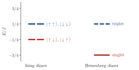
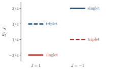

Advanced Quantum Materials 2027 · All lectures · Lecture notes
Session 8. Quantum Magnetism, Spinons and Kondo Physics
8.3 Two minimal dimers, a classical order parameter and a quantum singlet
What is the smallest magnet whose ground state keeps time-reversal symmetry? The Ising dimer has a twofold ground level, and its two product states \(|{\uparrow\downarrow}\rangle\) and \(|{\downarrow\uparrow}\rangle\) each break the symmetry. The Heisenberg dimer has a single ground state, the singlet (8.3), with \(\langle\mathbf S_i\rangle=0\), so two spins are enough.
\[H_\text{Heis} = \sum_{\langle ij\rangle} J_{ij}\, \mathbf S_i\cdot\mathbf S_j, \qquad J_{ij} = \frac{4t_{ij}^2}{U}. \tag{6.5}\]
This is the Heisenberg model of Section 6.9, which the Hubbard model gives at large \(U\) with one electron on each site. The spins are \(\mathbf S_i=\boldsymbol\sigma/2\), each bond is counted once, and \(J_{ij}=4t_{ij}^2/U>0\) is antiferromagnetic. With two sites and \(J=1\) it is the Heisenberg dimer of this page.
The simplest way to start with quantum magnetism is to look first at the smallest possible magnet, which has two spins, and to compare two different Hamiltonians for it.
The first one is the Ising dimer,
\[\mathcal H_\text{Ising} = S_0^z S_1^z, \tag{8.1}\]
which couples only the \(z\)-components of two spin-\(1/2\)’s. This Hamiltonian has two degenerate ground states, which are related by time reversal.
\[|GS_1\rangle = |{\uparrow\downarrow}\rangle, \qquad |GS_2\rangle = |{\downarrow\uparrow}\rangle.\]
Both are eigenstates with the same energy, but each one of them alone breaks time-reversal symmetry, since time reversal flips every spin and so it turns \(|GS_1\rangle\) into \(|GS_2\rangle\) and the other way around. Only the degenerate pair of the two states together respects the symmetry. A macroscopic symmetry-broken antiferromagnet, of the same kind as the one of Section 6.4, is the version of this same problem with an infinite number of sites. The same argument also works for ferromagnets and spin spirals.
Let us now replace the Ising coupling by the full quantum Heisenberg dimer, which has rotational symmetry,
\[\mathcal H_\text{Heis} = \mathbf S_0 \cdot \mathbf S_1. \tag{8.2}\]
This is the model that we obtain from a half-filled Hubbard model with strong interactions in the large-\(U\) limit, as we derived in Section 6.8. When we solve it with \(\mathbf S_0, \mathbf S_1\) as real spin-\(1/2\) operators, the two spin-\(1/2\)’s combine into a singlet (\(S=0\)) and a triplet (\(S=1\)).
The value is \(\mathbf S_0\cdot\mathbf S_1 = -3/4\) for the singlet and \(+1/4\) for the triplet, so the unique ground state of the Heisenberg dimer is the singlet,
\[|GS\rangle = \frac{1}{\sqrt2}\Big(|{\uparrow\downarrow}\rangle - |{\downarrow\uparrow}\rangle\Big), \qquad \langle \mathbf S_i \rangle = 0. \tag{8.3}\]
It is unique, it is time-reversal symmetric and it is maximally entangled, and the threefold triplet lies one unit of the coupling above it.
The steps From the two spins to the singlet and the triplet
We write the product of the two spins with \(S^\pm=S^x\pm iS^y\),
\[\mathbf S_0\cdot\mathbf S_1=S^z_0S^z_1+\tfrac12\big(S^+_0S^-_1+S^-_0S^+_1\big).\]
The simplest case is \(|{\uparrow\uparrow}\rangle\). Each term in the bracket raises one of the two spins, and both are already up, so the bracket gives zero and only \(S^z_0S^z_1=+\tfrac14\) remains. The same holds for \(|{\downarrow\downarrow}\rangle\), so both states have the energy \(+1/4\).
For the antiparallel states the bracket exchanges the two spins with the factor \(\tfrac12\), \(|{\uparrow\downarrow}\rangle\to\tfrac12|{\downarrow\uparrow}\rangle\), while \(S^z_0S^z_1=-\tfrac14\). In the basis \(|{\uparrow\downarrow}\rangle\), \(|{\downarrow\uparrow}\rangle\) the Hamiltonian is then
\[\begin{pmatrix}-\tfrac14&\tfrac12\\\tfrac12&-\tfrac14\end{pmatrix},\]
with the eigenvalue \(+\tfrac14\) for \((|{\uparrow\downarrow}\rangle+|{\downarrow\uparrow}\rangle)/\sqrt2\) and \(-\tfrac34\) for \((|{\uparrow\downarrow}\rangle-|{\downarrow\uparrow}\rangle)/\sqrt2\), which is (8.3).
The three states at \(+1/4\) are the triplet, and we see this with the total spin \(\mathbf S=\mathbf S_0+\mathbf S_1\). Its square is \(\mathbf S^2=\mathbf S_0^2+\mathbf S_1^2+2\,\mathbf S_0\cdot\mathbf S_1\), and a spin one half has \(\mathbf S_i^2=\tfrac12\big(\tfrac12+1\big)=\tfrac34\), so
\[\mathbf S_0\cdot\mathbf S_1=\tfrac12\big(\mathbf S^2-\mathbf S_0^2-\mathbf S_1^2\big)=\tfrac12\Big(S(S+1)-\tfrac32\Big).\]
This gives \(-3/4\) for \(S=0\) and \(+1/4\) for \(S=1\). So the level at \(+1/4\) holds the \(2S+1=3\) states of \(S=1\), and the singlet is the only state with \(S=0\). The singlet also has \(\langle\mathbf S_i\rangle=0\). Its two terms have opposite \(S^z_i\) with the same weight, so \(\langle S^z_i\rangle=0\). The operators \(S^x_i\) and \(S^y_i\) flip one spin, so they take the singlet to a state with two parallel spins, which is orthogonal to it.
This ground state is different from the Ising case in three ways, and these three points are important for the rest of the session. First, it is the unique ground state, so there is no degeneracy and no spontaneous choice between states. Second, it is time-reversal symmetric, since time reversal maps \(|GS\rangle\) to itself, and so \(\langle\mathbf S_i\rangle=0\) on each site. Third, it is maximally entangled, since the two terms in (8.3) have the same weight, which is the largest entanglement that two qubits can have. It is the singlet (7.3) of Session 7, with the entanglement entropy \(\log 2\) of (7.7). Can we have a macroscopic version of this ground state? This question is the origin of quantum spin liquids. Before we go on, Schematic 8.2 puts the levels of the two dimers side by side.


The Ising dimer of two spins one half is
\[\mathcal H_\text{Ising} = S_0^z S_1^z.\]
What is the energy of the state \(|{\uparrow\downarrow}\rangle\)?
Show the answers
- A. ✗ False
This is false. The Ising dimer only has \(S^z_0S^z_1=\pm\tfrac14\), so its energies are \(\pm1/4\). The value \(-3/4\) needs the \(x\) and \(y\) terms of the Heisenberg dimer.
- B. ✓ True
This is true. The product of the two \(z\) components is \(-1/4\) for antiparallel spins and \(+1/4\) for parallel ones. The two antiparallel states are degenerate, and each symmetry-broken state chooses one of them.
- C. ✗ False
This is false. The states \(|{\uparrow\uparrow}\rangle\) and \(|{\downarrow\downarrow}\rangle\) have \(S^z_0S^z_1=+\tfrac14\), and they are the ones with energy \(+1/4\). For antiparallel spins the product is \((\tfrac12)(-\tfrac12)=-\tfrac14\).
We change the sign of the coupling, \(H=J\,\mathbf S_0\cdot\mathbf S_1\) with \(J<0\). What is the ground state of the dimer?
Show the answers
- A. ✗ False
This is false. Take \(J=-1\). The singlet has energy \(-3J/4=+3/4\) and the triplet has \(J/4=-1/4\), so the triplet is lower.

The levels of \(H=J\,\mathbf S_0\cdot\mathbf S_1\) for \(J=1\) and \(J=-1\), with the energy in units of \(|J|\). The sign of \(J\) turns the levels upside down, and the triplet at \(-1/4\) becomes the ground level. - B. ✗ False
This is false. The Hamiltonian commutes with the total spin, so \(|{\downarrow\downarrow}\rangle\) and \((|{\uparrow\downarrow}\rangle+|{\downarrow\uparrow}\rangle)/\sqrt2\) have the same energy \(J/4\). The ground state is threefold degenerate and not a single state.
- C. ✓ True
This is true. The value of \(\mathbf S_0\cdot\mathbf S_1\) is \(-3/4\) for the singlet and \(+1/4\) for the triplet. For \(J<0\) the energy \(J/4\) of the triplet is below \(-3J/4\) of the singlet, and the three triplet states are degenerate.
Two spins one half are coupled by
\[H=\mathbf S_0\cdot\mathbf S_1.\]
Which state is the ground state of \(H\)?
Show the answers
- A. ✓ True
This is true. This is the singlet, with \(S=0\). With \(\mathbf S_0\cdot\mathbf S_1=\tfrac12\big(S(S+1)-\tfrac32\big)\) its energy is \(-3/4\), the lowest of the four states.
- B. ✗ False
This is false. This is the triplet state with \(S^z=0\). It has \(S=1\) and the energy \(+1/4\), one unit above the singlet.
- C. ✗ False
This is false. The exchange term turns it partly into \(|{\downarrow\uparrow}\rangle\), since \(H|{\uparrow\downarrow}\rangle=-\tfrac14|{\uparrow\downarrow}\rangle+\tfrac12|{\downarrow\uparrow}\rangle\), so it is not an eigenstate. Its mean energy is \(-1/4\), the value of the Ising dimer, which is above \(-3/4\).
Take the singlet \(|s\rangle=(|{\uparrow\downarrow}\rangle-|{\downarrow\uparrow}\rangle)/\sqrt2\). Show that \(\langle s|S^z_0S^z_1|s\rangle=-1/4\), and that the \(x\) and the \(y\) terms also give \(-1/4\) each, so that \(\langle s|\mathbf S_0\cdot\mathbf S_1|s\rangle=-3/4\). What is the lowest energy of the Ising dimer \(S^z_0S^z_1\)?
Solution
Both terms of the singlet have antiparallel spins, so \(S^z_0S^z_1=-\tfrac14\) on each of them and \(\langle s|S^z_0S^z_1|s\rangle=-\tfrac14\).
For the \(x\) term we use \(S^x=\sigma^x/2\), where \(\sigma^x\) flips the spin. Then \(\sigma^x_0\sigma^x_1\) flips both spins, \(|{\uparrow\downarrow}\rangle\to|{\downarrow\uparrow}\rangle\) and \(|{\downarrow\uparrow}\rangle\to|{\uparrow\downarrow}\rangle\). So it turns \(|s\rangle\) into \(-|s\rangle\), and \(\langle s|S^x_0S^x_1|s\rangle=-\tfrac14\).
For the \(y\) term we use \(\sigma^y|{\uparrow}\rangle=i|{\downarrow}\rangle\) and \(\sigma^y|{\downarrow}\rangle=-i|{\uparrow}\rangle\). This gives \(\sigma^y_0\sigma^y_1|{\uparrow\downarrow}\rangle=(i)(-i)|{\downarrow\uparrow}\rangle=|{\downarrow\uparrow}\rangle\), and in the same way \(|{\downarrow\uparrow}\rangle\to|{\uparrow\downarrow}\rangle\). Again \(|s\rangle\to-|s\rangle\), and \(\langle s|S^y_0S^y_1|s\rangle=-\tfrac14\). The sum of the three terms is \(-\tfrac34\).
The Ising dimer has only the \(z\) term, so its lowest energy is \(-\tfrac14\), which \(|{\uparrow\downarrow}\rangle\) and \(|{\downarrow\uparrow}\rangle\) both reach. The other \(-\tfrac12\) of the singlet comes from the transverse terms, which flip both spins and mix the two antiparallel states. These quantum fluctuations are what the Ising dimer misses, and they make the ground state unique, with no direction of the spin chosen. A mean-field calculation misses them too, since a product state has \(\langle\mathbf S_0\cdot\mathbf S_1\rangle=\langle\mathbf S_0\rangle\cdot\langle\mathbf S_1\rangle\) with \(|\langle\mathbf S_i\rangle|\le\tfrac12\), so its best energy is also \(-\tfrac14\).
- In Section 8.5 a product of these singlets is the ground state of a macroscopic magnet that does not break time-reversal symmetry.
- In Section 8.6 the singlets resonate over a frustrated lattice, and this is the resonating valence bond state.
- In Section 8.11 a magnetic impurity forms the same kind of singlet with a conduction electron.